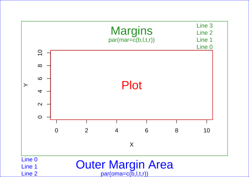

Code
#par() #返回当前设置，一个list
opar<-par(no.readonly = TRUE)
#par() #返回当前设置，一个list
opar<-par(no.readonly = TRUE)# initialization
par(mar=c(3,3,3,3))
num <- 0 ;
num1 <- 0
plot(0,0 , xlim=c(0,21) , ylim=c(0.5,6.5), col="white" , yaxt="n" , ylab="" , xlab="")
#fill the graph
for (i in seq(1,20)){
points(i,1 , pch=i , cex=3)
points(i,2 , col=i , pch=16 , cex=3)
points(i,3 , col="black" , pch=16 , cex=i*0.25)
#lty
if(i %in% c(seq(1,18,3))){
num=num+1
points(c(i,i+2), c(4,4) , col="black" , lty=num , type="l" , lwd=2)
text(i+1.1 , 4.15 , num)
}
#type and lwd
if(i %in% c(seq(1,20,5))){
num1=num1+1
points(c(i,i+1,i+2,i+3), c(5,5,5,5) , col="black" , type=c("p","l","b","o")[num1] , lwd=2)
text(i+1.1 , 5.2 , c("p","l","b","o")[num1] )
points(c(i,i+1,i+2,i+3), c(6,6,6,6) , col="black" , type="l", lwd=num1)
text(i+1.1 , 6.2 , num1 )
}
}
#add axis
axis(2, at = c(1,2,3,4,5,6), labels = c("pch" , "col" , "cex" , "lty", "type" , "lwd" ),
tick = TRUE, col = "black", las = 1, cex.axis = 0.8)
par(opar) #恢复默认设置par(pch=22) #空心=0、1、2、5、6, 黑色=15:20, col边界色 bg= 21-25填充
par(lty=1) # 1=实线 2:6=虚线
par(cex.main=2,font.main=4,col.main="black")#font字体样式 4=粗斜体
par(cex.sub=1.5,font.sub=3,col.sub="gray") # 3=斜体
par(cex.lab=1.25,font.lab=2,col.lab="purple") # 2=粗体
par(cex.axis=1,font.axis=1,col.axis="green4") # 1=常规
par(fg="black") #边框和刻度颜色
par(bg="white") #背景色
par(pin=c(4,3)) #宽×高 1英寸=1.7
par(mar=c(5,4,4,2)+0.1) #默认值，边距# Margins area
par(oma=c(3,3,3,3)) # all sides have 3 lines of space
par(mar=c(5,4,4,2) + 0.1)
# Plot
plot(0:10, 0:10, type="n", xlab="X", ylab="Y") # type="n" hides the points
# Place text in the plot and color everything plot-related red
text(5,5, "Plot", col="red", cex=2)
box(col="red")
# Place text in the margins and label the margins, all in forestgreen
mtext("Margins", side=3, line=2, cex=2, col="forestgreen")
mtext("par(mar=c(b,l,t,r))", side=3, line=1, cex=1, col="forestgreen")
mtext("Line 0", side=3, line=0, adj=1.0, cex=1, col="forestgreen")
mtext("Line 1", side=3, line=1, adj=1.0, cex=1, col="forestgreen")
mtext("Line 2", side=3, line=2, adj=1.0, cex=1, col="forestgreen")
mtext("Line 3", side=3, line=3, adj=1.0, cex=1, col="forestgreen")
box("figure", col="forestgreen")
# Label the outer margin area and color it blue
# Note the 'outer=TRUE' command moves us from the figure margins to the outer margins.
mtext("Outer Margin Area", side=1, line=1, cex=2, col="blue", outer=TRUE)
mtext("par(oma=c(b,l,t,r))", side=1, line=2, cex=1, col="blue", outer=TRUE)
mtext("Line 0", side=1, line=0, adj=0.0, cex=1, col="blue", outer=TRUE)
mtext("Line 1", side=1, line=1, adj=0.0, cex=1, col="blue", outer=TRUE)
mtext("Line 2", side=1, line=2, adj=0.0, cex=1, col="blue", outer=TRUE)
box("outer", col="blue") 
colors()
#> [1] "white" "aliceblue" "antiquewhite"
#> [4] "antiquewhite1" "antiquewhite2" "antiquewhite3"
#> [7] "antiquewhite4" "aquamarine" "aquamarine1"
#> [10] "aquamarine2" "aquamarine3" "aquamarine4"
#> [13] "azure" "azure1" "azure2"
#> [16] "azure3" "azure4" "beige"
#> [19] "bisque" "bisque1" "bisque2"
#> [22] "bisque3" "bisque4" "black"
#> [25] "blanchedalmond" "blue" "blue1"
#> [28] "blue2" "blue3" "blue4"
#> [31] "blueviolet" "brown" "brown1"
#> [34] "brown2" "brown3" "brown4"
#> [37] "burlywood" "burlywood1" "burlywood2"
#> [40] "burlywood3" "burlywood4" "cadetblue"
#> [43] "cadetblue1" "cadetblue2" "cadetblue3"
#> [46] "cadetblue4" "chartreuse" "chartreuse1"
#> [49] "chartreuse2" "chartreuse3" "chartreuse4"
#> [52] "chocolate" "chocolate1" "chocolate2"
#> [55] "chocolate3" "chocolate4" "coral"
#> [58] "coral1" "coral2" "coral3"
#> [61] "coral4" "cornflowerblue" "cornsilk"
#> [64] "cornsilk1" "cornsilk2" "cornsilk3"
#> [67] "cornsilk4" "cyan" "cyan1"
#> [70] "cyan2" "cyan3" "cyan4"
#> [73] "darkblue" "darkcyan" "darkgoldenrod"
#> [76] "darkgoldenrod1" "darkgoldenrod2" "darkgoldenrod3"
#> [79] "darkgoldenrod4" "darkgray" "darkgreen"
#> [82] "darkgrey" "darkkhaki" "darkmagenta"
#> [85] "darkolivegreen" "darkolivegreen1" "darkolivegreen2"
#> [88] "darkolivegreen3" "darkolivegreen4" "darkorange"
#> [91] "darkorange1" "darkorange2" "darkorange3"
#> [94] "darkorange4" "darkorchid" "darkorchid1"
#> [97] "darkorchid2" "darkorchid3" "darkorchid4"
#> [100] "darkred" "darksalmon" "darkseagreen"
#> [103] "darkseagreen1" "darkseagreen2" "darkseagreen3"
#> [106] "darkseagreen4" "darkslateblue" "darkslategray"
#> [109] "darkslategray1" "darkslategray2" "darkslategray3"
#> [112] "darkslategray4" "darkslategrey" "darkturquoise"
#> [115] "darkviolet" "deeppink" "deeppink1"
#> [118] "deeppink2" "deeppink3" "deeppink4"
#> [121] "deepskyblue" "deepskyblue1" "deepskyblue2"
#> [124] "deepskyblue3" "deepskyblue4" "dimgray"
#> [127] "dimgrey" "dodgerblue" "dodgerblue1"
#> [130] "dodgerblue2" "dodgerblue3" "dodgerblue4"
#> [133] "firebrick" "firebrick1" "firebrick2"
#> [136] "firebrick3" "firebrick4" "floralwhite"
#> [139] "forestgreen" "gainsboro" "ghostwhite"
#> [142] "gold" "gold1" "gold2"
#> [145] "gold3" "gold4" "goldenrod"
#> [148] "goldenrod1" "goldenrod2" "goldenrod3"
#> [151] "goldenrod4" "gray" "gray0"
#> [154] "gray1" "gray2" "gray3"
#> [157] "gray4" "gray5" "gray6"
#> [160] "gray7" "gray8" "gray9"
#> [163] "gray10" "gray11" "gray12"
#> [166] "gray13" "gray14" "gray15"
#> [169] "gray16" "gray17" "gray18"
#> [172] "gray19" "gray20" "gray21"
#> [175] "gray22" "gray23" "gray24"
#> [178] "gray25" "gray26" "gray27"
#> [181] "gray28" "gray29" "gray30"
#> [184] "gray31" "gray32" "gray33"
#> [187] "gray34" "gray35" "gray36"
#> [190] "gray37" "gray38" "gray39"
#> [193] "gray40" "gray41" "gray42"
#> [196] "gray43" "gray44" "gray45"
#> [199] "gray46" "gray47" "gray48"
#> [202] "gray49" "gray50" "gray51"
#> [205] "gray52" "gray53" "gray54"
#> [208] "gray55" "gray56" "gray57"
#> [211] "gray58" "gray59" "gray60"
#> [214] "gray61" "gray62" "gray63"
#> [217] "gray64" "gray65" "gray66"
#> [220] "gray67" "gray68" "gray69"
#> [223] "gray70" "gray71" "gray72"
#> [226] "gray73" "gray74" "gray75"
#> [229] "gray76" "gray77" "gray78"
#> [232] "gray79" "gray80" "gray81"
#> [235] "gray82" "gray83" "gray84"
#> [238] "gray85" "gray86" "gray87"
#> [241] "gray88" "gray89" "gray90"
#> [244] "gray91" "gray92" "gray93"
#> [247] "gray94" "gray95" "gray96"
#> [250] "gray97" "gray98" "gray99"
#> [253] "gray100" "green" "green1"
#> [256] "green2" "green3" "green4"
#> [259] "greenyellow" "grey" "grey0"
#> [262] "grey1" "grey2" "grey3"
#> [265] "grey4" "grey5" "grey6"
#> [268] "grey7" "grey8" "grey9"
#> [271] "grey10" "grey11" "grey12"
#> [274] "grey13" "grey14" "grey15"
#> [277] "grey16" "grey17" "grey18"
#> [280] "grey19" "grey20" "grey21"
#> [283] "grey22" "grey23" "grey24"
#> [286] "grey25" "grey26" "grey27"
#> [289] "grey28" "grey29" "grey30"
#> [292] "grey31" "grey32" "grey33"
#> [295] "grey34" "grey35" "grey36"
#> [298] "grey37" "grey38" "grey39"
#> [301] "grey40" "grey41" "grey42"
#> [304] "grey43" "grey44" "grey45"
#> [307] "grey46" "grey47" "grey48"
#> [310] "grey49" "grey50" "grey51"
#> [313] "grey52" "grey53" "grey54"
#> [316] "grey55" "grey56" "grey57"
#> [319] "grey58" "grey59" "grey60"
#> [322] "grey61" "grey62" "grey63"
#> [325] "grey64" "grey65" "grey66"
#> [328] "grey67" "grey68" "grey69"
#> [331] "grey70" "grey71" "grey72"
#> [334] "grey73" "grey74" "grey75"
#> [337] "grey76" "grey77" "grey78"
#> [340] "grey79" "grey80" "grey81"
#> [343] "grey82" "grey83" "grey84"
#> [346] "grey85" "grey86" "grey87"
#> [349] "grey88" "grey89" "grey90"
#> [352] "grey91" "grey92" "grey93"
#> [355] "grey94" "grey95" "grey96"
#> [358] "grey97" "grey98" "grey99"
#> [361] "grey100" "honeydew" "honeydew1"
#> [364] "honeydew2" "honeydew3" "honeydew4"
#> [367] "hotpink" "hotpink1" "hotpink2"
#> [370] "hotpink3" "hotpink4" "indianred"
#> [373] "indianred1" "indianred2" "indianred3"
#> [376] "indianred4" "ivory" "ivory1"
#> [379] "ivory2" "ivory3" "ivory4"
#> [382] "khaki" "khaki1" "khaki2"
#> [385] "khaki3" "khaki4" "lavender"
#> [388] "lavenderblush" "lavenderblush1" "lavenderblush2"
#> [391] "lavenderblush3" "lavenderblush4" "lawngreen"
#> [394] "lemonchiffon" "lemonchiffon1" "lemonchiffon2"
#> [397] "lemonchiffon3" "lemonchiffon4" "lightblue"
#> [400] "lightblue1" "lightblue2" "lightblue3"
#> [403] "lightblue4" "lightcoral" "lightcyan"
#> [406] "lightcyan1" "lightcyan2" "lightcyan3"
#> [409] "lightcyan4" "lightgoldenrod" "lightgoldenrod1"
#> [412] "lightgoldenrod2" "lightgoldenrod3" "lightgoldenrod4"
#> [415] "lightgoldenrodyellow" "lightgray" "lightgreen"
#> [418] "lightgrey" "lightpink" "lightpink1"
#> [421] "lightpink2" "lightpink3" "lightpink4"
#> [424] "lightsalmon" "lightsalmon1" "lightsalmon2"
#> [427] "lightsalmon3" "lightsalmon4" "lightseagreen"
#> [430] "lightskyblue" "lightskyblue1" "lightskyblue2"
#> [433] "lightskyblue3" "lightskyblue4" "lightslateblue"
#> [436] "lightslategray" "lightslategrey" "lightsteelblue"
#> [439] "lightsteelblue1" "lightsteelblue2" "lightsteelblue3"
#> [442] "lightsteelblue4" "lightyellow" "lightyellow1"
#> [445] "lightyellow2" "lightyellow3" "lightyellow4"
#> [448] "limegreen" "linen" "magenta"
#> [451] "magenta1" "magenta2" "magenta3"
#> [454] "magenta4" "maroon" "maroon1"
#> [457] "maroon2" "maroon3" "maroon4"
#> [460] "mediumaquamarine" "mediumblue" "mediumorchid"
#> [463] "mediumorchid1" "mediumorchid2" "mediumorchid3"
#> [466] "mediumorchid4" "mediumpurple" "mediumpurple1"
#> [469] "mediumpurple2" "mediumpurple3" "mediumpurple4"
#> [472] "mediumseagreen" "mediumslateblue" "mediumspringgreen"
#> [475] "mediumturquoise" "mediumvioletred" "midnightblue"
#> [478] "mintcream" "mistyrose" "mistyrose1"
#> [481] "mistyrose2" "mistyrose3" "mistyrose4"
#> [484] "moccasin" "navajowhite" "navajowhite1"
#> [487] "navajowhite2" "navajowhite3" "navajowhite4"
#> [490] "navy" "navyblue" "oldlace"
#> [493] "olivedrab" "olivedrab1" "olivedrab2"
#> [496] "olivedrab3" "olivedrab4" "orange"
#> [499] "orange1" "orange2" "orange3"
#> [502] "orange4" "orangered" "orangered1"
#> [505] "orangered2" "orangered3" "orangered4"
#> [508] "orchid" "orchid1" "orchid2"
#> [511] "orchid3" "orchid4" "palegoldenrod"
#> [514] "palegreen" "palegreen1" "palegreen2"
#> [517] "palegreen3" "palegreen4" "paleturquoise"
#> [520] "paleturquoise1" "paleturquoise2" "paleturquoise3"
#> [523] "paleturquoise4" "palevioletred" "palevioletred1"
#> [526] "palevioletred2" "palevioletred3" "palevioletred4"
#> [529] "papayawhip" "peachpuff" "peachpuff1"
#> [532] "peachpuff2" "peachpuff3" "peachpuff4"
#> [535] "peru" "pink" "pink1"
#> [538] "pink2" "pink3" "pink4"
#> [541] "plum" "plum1" "plum2"
#> [544] "plum3" "plum4" "powderblue"
#> [547] "purple" "purple1" "purple2"
#> [550] "purple3" "purple4" "red"
#> [553] "red1" "red2" "red3"
#> [556] "red4" "rosybrown" "rosybrown1"
#> [559] "rosybrown2" "rosybrown3" "rosybrown4"
#> [562] "royalblue" "royalblue1" "royalblue2"
#> [565] "royalblue3" "royalblue4" "saddlebrown"
#> [568] "salmon" "salmon1" "salmon2"
#> [571] "salmon3" "salmon4" "sandybrown"
#> [574] "seagreen" "seagreen1" "seagreen2"
#> [577] "seagreen3" "seagreen4" "seashell"
#> [580] "seashell1" "seashell2" "seashell3"
#> [583] "seashell4" "sienna" "sienna1"
#> [586] "sienna2" "sienna3" "sienna4"
#> [589] "skyblue" "skyblue1" "skyblue2"
#> [592] "skyblue3" "skyblue4" "slateblue"
#> [595] "slateblue1" "slateblue2" "slateblue3"
#> [598] "slateblue4" "slategray" "slategray1"
#> [601] "slategray2" "slategray3" "slategray4"
#> [604] "slategrey" "snow" "snow1"
#> [607] "snow2" "snow3" "snow4"
#> [610] "springgreen" "springgreen1" "springgreen2"
#> [613] "springgreen3" "springgreen4" "steelblue"
#> [616] "steelblue1" "steelblue2" "steelblue3"
#> [619] "steelblue4" "tan" "tan1"
#> [622] "tan2" "tan3" "tan4"
#> [625] "thistle" "thistle1" "thistle2"
#> [628] "thistle3" "thistle4" "tomato"
#> [631] "tomato1" "tomato2" "tomato3"
#> [634] "tomato4" "turquoise" "turquoise1"
#> [637] "turquoise2" "turquoise3" "turquoise4"
#> [640] "violet" "violetred" "violetred1"
#> [643] "violetred2" "violetred3" "violetred4"
#> [646] "wheat" "wheat1" "wheat2"
#> [649] "wheat3" "wheat4" "whitesmoke"
#> [652] "yellow" "yellow1" "yellow2"
#> [655] "yellow3" "yellow4" "yellowgreen"
rgb(red = 0,green = 1,blue = 1)
#> [1] "#00FFFF"
hsv()
#> [1] "#FF0000"
barplot(1:10,col=c(1:10))
library(RColorBrewer)
RColorBrewer::display.brewer.all()barplot(rep(1,7),col=brewer.pal(7,"Set3"))
z<-10/x
plot(x,y,type="b",pch=21,col="red",bg="black",
xaxt="n",yaxt="n",lty=1 #xaxt、yaxt 禁用X、Y坐标轴刻度
)
lines(x,z,type="b",pch=22,col="blue",lty=2,bg="green") #添加新图形
#绘制自定义坐标轴
#axis(side,at= ,labels = ,pos = ,las=,tck=,…)
#side 1=下，2=左，3=上，4=右
#at 数值向量，绘制刻度线的位置
#labels 字符序列，刻度线的文字标签
#las 0=垂直于坐标轴，2=平行于坐标轴
#tck=-0.01 刻度线的长度 1=网格线 0=禁用刻度 负值在图形外侧，正值在图形内侧
axis(side = 1,at=x,labels = x,las=0,tck=-0.1)
axis(side=2,at=x,labels=x,col.axis="red",las=2,tck=0.1)
axis(side=4,at=z,labels=round(z,digits=3),col.axis="blue",las=2,tck=-.05)
#library(Hmisc)
#minor.tick(nx=2,ny=2,tick.ratio = .5)#添加次要刻度线
## 图例 legend(location, title, legend,...)
par(lwd=2,cex=1,font.lab=2)
legend("top",inset=0.05,title="函数",c("Y=X","Y=10/x"),text.col = "green",
lty=c(3,2),pch=c(21,22),col=c("red","blue",bg=c("black","green")))
# 文本
#mtext("text",side,line=,)
mtext("Y=10/X",side=4,line=3,cex.lab=1,las=2,col="blue") #边界文本
title(main="my graphics",
sub="subtitle",
xlab="X values",
ylab="Y=X")
abline(h=c(1,4),lty=2,col="red") ###添加水平辅助线
abline(v=c(8,10),lty=4,col="blue") ###添加垂直辅助线
# text(x,y,"text",pos=) 1=下，2=左，3=上，4=右
text(5,5,"文本1",pos=4,adj=0,cex=2,col="green")
#text(locator[1],"文本",pos=4,adj=0,cex=2,col="green")#鼠标点击确定位置#参数fig=c(x1,x2,y1,y2)
attach(mtcars)
#> The following object is masked from package:ggplot2:
#>
#> mpg
par(fig=c(0,0.8,0,0.8))
plot(wt,mpg,xlab="Miles per Gallon",ylab="Car Weight")
par(fig=c(0,0.8,0.55,1),new=TRUE)
boxplot(wt,horizontal = TRUE,axes=FALSE)
par(fig=c(0.65,1,0,0.8),new=TRUE)
boxplot(mpg,axes=FALSE)
mtext("boxplot of wt",side=3,outer = TRUE,line=-3)data(mpg,package="ggplot2") boxplot.stats(mpg$hwy)
#> $stats
#> [1] 12 18 24 27 37
#>
#> $n
#> [1] 234
#>
#> $conf
#> [1] 23.07041 24.92959
#>
#> $out
#> [1] 44 44 41
boxplot(mpg$hwy)
boxplot(hwy~drv,data=mpg,
notch=TRUE,
varwidth=TRUE)
boxplot(hwy~drv*cyl,data=mpg)car::scatterplot(mpg~wt|am,data=mtcars,
id=TRUE,
legend =TRUE,#图例
grid=TRUE, #添加网格线
boxplots="xy" #添加边界箱线图
)#> Fiat 128 Merc 240D Maserati Bora Chrysler Imperial
#> 4 5 12 14car::scatterplotMatrix(~mpg+disp+drat+wt,data=mtcars)corrgram()
mosaic()